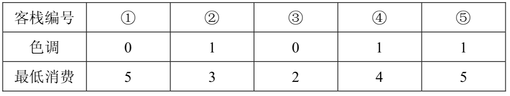

丽江河边有 $n$ 家很有特色的客栈，客栈按照其位置顺序从 $1$ 到 $n$ 编号。每家客栈都按照某一种色调进行装饰（总共 $k$ 种，用整数 $0$ ~ $k-1$ 表示），且每家客栈都设有一家咖啡店，每家咖啡店均有各自的最低消费。
两位游客一起去丽江旅游，他们喜欢相同的色调，又想尝试两个不同的客栈，因此决定分别住在色调相同的两家客栈中。晚上，他们打算选择一家咖啡店喝咖啡，要求咖啡店位于两人住的两家客栈之间（包括他们住的客栈），且咖啡店的最低消费不超过 $p$。
他们想知道总共有多少种选择住宿的方案，保证晚上可以找到一家最低消费不超过 $p$ 元的咖啡店小聚。
第一行三个整数 $n$，$k$，$p$，每两个整数之间用一个空格隔开，分别表示客栈的个数，色调的数目和能接受的最低消费的最高值；
接下来的 $n$ 行，第 $i+1$ 行两个整数，之间用一个空格隔开，分别表示 $i$ 号客栈的装饰色调和i号客栈的咖啡店的最低消费。
输出只有一行，一个整数，表示可选的住宿方案的总数。
5 2 3 0 5 1 3 0 2 1 4 1 5
3
【样例说明】

2 人要住同样色调的客栈，所有可选的住宿方案包括：住客栈 1 3，2 4，2 5，4 5，但是若选择住 4、5 号客栈的话，4、5 号客栈之间的咖啡店的最低消费是 4，而两人能承受的最低消费是 3 元，所以不满足要求。因此只有前 3 种方案可选。
【数据范围】
对于30%的数据，有 $n≤100$；对于50%的数据，有 $n≤1,000$；对于100%的数据，有 $2≤n≤200,000，0<k≤50，0≤p≤100，0≤$ 最低消费 $≤100$。
 Comet OJ
Comet OJ